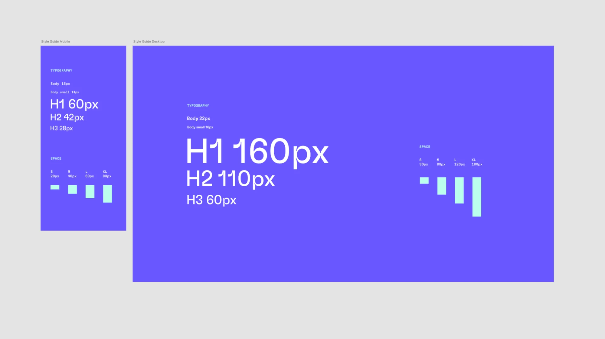

FabUnit: A Smart Way To Control And Synchronize Typo And Space
QUICK SUMMARY
Today, we’ll take a look at the Sass function that does all the work for you — with no media queries, no breakpoints, and no design jumps. In this article, Fabienne Bielmann explains what FabUnit stands for and why she decided to create her very own responsive magic formula.What if we were able to implement the sizes of designer’s contribution without hassle? What if we could set custom anchor points to generate a perfectly responsive value, giving us more options as the fluid size approach? What if we had a magic formula that controlled and synchronized the whole project?
It is often the case that I receive two templates from the designer: One for mobile and one for desktop. Lately, I have been asking myself how I could automate the process and optimize the result. How do I implement the specified sizes most effectively? How do I ensure a comfortable tablet view? How can I optimize the output for large screens? How can I react to extreme aspect ratios?/
I would like to be able to read the two values of the different sizes (font, spaces, etc.) in pixel and enter them as arguments into a function that does all the work for me. I want to create my own responsive magic formula, my FabUnit.
When I started working on this topic in the spring and launched the FabUnit, I came across this interesting article by Adrian. In the meantime, Ruslan and Brecht have also researched in this direction and presented interesting thoughts.
How Can I Implement The Design Templates Most
Effectively? #
I am tired of writing media queries for every value, and I want to avoid design jumps. The maintenance and the result are not satisfying. So what is the best way to implement the designer’s contribution?
But for my projects, I usually need more setting options. The tablet view often turns out too small, and I can neither react to larger viewports nor to the aspect ratio.
And it would be nice to have a proportional synchronization across the whole project. I can define global variables with the calculated values, but I also want to be able to generate an interpolated value locally in the components without any effort. I would like to draw my own responsive line. So I need a tool that spits out the perfect value based on several anchor points (screen definitions) and automates the processes for most of my projects. My tool must be fast and easy to use, and the code must be readable and maintainable.
What Constants From The Design Specifications Should Our Calculations Be Based On? #
The body font size should be 16px on mobile and 22px on desktop (we will deal with the complete style guide later on). The mobile sizes should start at 375px and continuously adjust to 1024px. Up to 1440px, the sizes are to remain statically at the optimum. After that, the values should scale linearly up to 2000px, after which the max-wrapper takes effect.
This gives us the following constants that apply to the whole project:
| # | First | Last | Handle |
|---|---|---|---|
| 1 | Mark | Otto | @mdo |
| 2 | Jacob | Thornton | @fat |
| 3 | Larry the Bird | ||
The body font size should be at least 16px, ideally 22px. The maximum font size at 2000px should be calculated automatically:
| # | First | Last | Handle |
|---|---|---|---|
| 1 | Mark | Otto | @mdo |
| 2 | Jacob | Thornton | @fat |
| 3 | Larry the Bird | ||
So, at the end of the day, my function should be able to take two arguments — in this case, 16 and 22.
| # | First | Last | Handle |
|---|---|---|---|
| 1 | Mark | Otto | @mdo |
| 2 | Jacob | Thornton | @fat |
| 3 | Larry the Bird | ||
The body font size should be at least 16px, ideally 22px. The maximum font size at 2000px should be calculated automatically:
| fab-unit(16, 22); |
|---|
The Calculation #
If you are not interested in the mathematical derivation of the formula, feel free to jump directly to the section How To Use The FabUnit?”. “
So, let’s get started!
.png) Meet Smashing Online Workshops on front-end & UX, with practical takeaways, live sessions, video recordings and a friendly Q&A. On design systems, UX, web performance and CSS/JS. With Brad Frost, Stephanie Troeth and so many others.
Meet Smashing Online Workshops on front-end & UX, with practical takeaways, live sessions, video recordings and a friendly Q&A. On design systems, UX, web performance and CSS/JS. With Brad Frost, Stephanie Troeth and so many others.
DEFINE MAIN CLAMPS #
First, we need to figure out which main clamps we want to set.
clamp2: clamp(Yb, slope2, Yu)
COMBINE AND NEST THE CLAMPS #
Now we have to combine the two clamps. This might get a little tricky. We have to consider that the two lines, slope1 and slope2, can overwrite each other, depending on how steep they are. Since we know that slope2 should be 45 degrees or 100% (m = 1), we can query whether slope1 is above 1. This way, we can set a different clamp depending on how the lines intersect.
If slope1 is steeper than slope2, we combine the clamps like this:
clamp(Yf, slope1, clamp(Yb, slope2, Yu))
If slope1 is flatter than slope2, we do this calculation:
clamp(clamp(Yf, slope1, Ya), slope2, Yu)
Combined:
steep-slope
? clamp(Yf, slope1, clamp(Yb, slope2, Yu))
: clamp(clamp(Yf, slope1, Ya), slope2, Yu)
SET THE MAXIMUM WRAPPER OPTIONALLY #
What if we don’t have a maximum wrapper that freezes the design above a certain width?
First, we need to figure out which main clamps we want to set.
clamp1: clamp(Yf, slope1, Ya)
max: max(Yb, slope2)
If slope1 is steeper than slope2:
clamp(Yf, slope1, max(Yb, slope2))
If slope1 is flatter than slope2:
max(clamp(Yf, slope1, Ya), slope2)
The calculation without wrapper — elastic upwards:
steep-slope
? clamp(Yf, slope1, max(Yb, slope2))
: max(clamp(Yf, slope1, Ya), slope2)
Combined, with optional max wrapper (if screen-max Xu is set):
Xu
? steep-slope
? clamp(Yf, slope1, clamp(Yb, slope2, Yu))
: max(clamp(Yf, slope1, Ya), Yu)
: steep-slope
? clamp(Yf, slope1, max(Yb, slope2))
: max(clamp(Yf, slope1, Ya), slope2)
Thus we have built the basic structure of the formula. Now we dive a little deeper.
CALCULATE THE MISSING VALUES #
Let’s see which values we get in as an argument and which we have to calculate now:
steep-slope
? clamp(Yf, slope1, clamp(Yb, slope2, Yu))
: max(clamp(Yf, slope1, Ya), Yu)
steep-slope
Ya = Yb = 22px
Yf = 16px
slope1 = Mfa
slope2 = Mbu
Yu
.steep-slope
Check whether the slope Yf → Ya is above the slope Yb → Yu (m = 1) :
.Mfa
Linear interpolation, including the calculation of the slope Yf → Ya:
Yf + (Ya - Yf) * (100vw - Xf) / (Xa - Xf)
.Yu
Calculating the position of Yu:
(Xu / Xb) * Yb
PUT ALL TOGETHER #
Xu ? ((Ya - Yf) / (Xa - Xf)) * 100 > 1 ? clamp(Yf, Yf + (Ya - Yf) * (100vw - Xf) / (Xa - Xf), clamp(Yb, 100vw / Xb * Yb, (Xu / Xb) * Yb)) : max(clamp(Yf, Yf + (Ya - Yf) * (100vw - Xf) / (Xa - Xf), Ya), (Xu / Xb) * Yb) : ((Ya - Yf) / (Xa - Xf)) * 100 > 1 ? clamp(Yf, Yf + (Ya - Yf) * (100vw - Xf) / (Xa - Xf), max(Yb, 100vw / Xb * Yb)) : max(clamp(Yf, Yf + (Ya - Yf) * (100vw - Xf) / (Xa - Xf), Ya), 100vw / Xb * Yb)
We’d better store some calculations in variables:
steep-slope = ((Ya - Yf) / (Xa - Xf)) * 100 > 1 slope1 = Yf + (Ya - Yf) * (100vw - Xf) / (Xa - Xf) slope2 = 100vw / Xb * Yb Yu = (Xu / Xb) * Yb Xu ? steep-slope ? clamp(Yf, slope1, clamp(Yb, slope2, Yu)) : max(clamp(Yf, slope1, Ya), Yu) : steep-slope ? clamp(Yf, slope1, max(Yb, slope2)) : max(clamp(Yf, slope1, Ya), slope2)
Include Aspect Ratio #
Because we now see how the cat jumps, we treat ourselves to another cookie. In the case of an extremely wide format, e.g. mobile device landscape, we want to scale down the sizes again. It’s more pleasant and readable this way.

So what if we could include the aspect ratio in our calculations? In this example, we want to shrink the sizes when the screen is wider than the aspect ratio of 16:9.
In both slope interpolations, we simply replace 100vw with the new screen factor.
slope1 = Yf + (Ya - Yf) * (screen-factor - Xf) / (Xa - Xf) slope2 = screen-factor / Xb * Yb
So, finally, that’s it. Let’s look at the whole magic formula now.
image
Formula #
screen-factor = min(100vw, 100vh * aspect-ratio) steep-slope = ((Ya - Yf) / (Xa - Xf)) * 100 > 1 slope1 = Yf + (Ya - Yf) * (screen-factor - Xf) / (Xa - Xf) slope2 = screen-factor / Xb * Yb Yu = (Xu / Xb) * Yb Xu ? steep-slope ? clamp(Yf, slope1, clamp(Yb, slope2, Yu)) : max(clamp(Yf, slope1, Ya), Yu) : steep-slope ? clamp(Yf, slope1, max(Yb, slope2)) : max(clamp(Yf, slope1, Ya), slope2)
Function #
Now we can integrate the formula into our setup. In this article, we’ll look at how to implement it in Sass. The two helper functions ensure that we output the rem values correctly (I will not go into it in detail). Then we set the anchor points and the aspect ratio as constants (respectively, Sass variables). Finally, we replace the coordinate points of our formula with variable names, and the FabUnit is ready for use.
@use "sass:math"; /* Helper functions */ $rem-base: 10px; @function strip-units($number) { @if (math.is-unitless($number)) { @return $number; } @else { @return math.div($number, $number * 0 + 1); } } @function rem($size){ @if (math.compatible($size, 1rem) and not math.is-unitless($size)) { @return $size; } @else { @return math.div(strip-units($size), strip-units($rem-base)) * 1rem; } } /* Default values fab-unit ü™Ñ */ $screen-min: 375; $screen-opt-start: 1024; $screen-opt-end: 1440; $screen-max: 2000; // $screen-opt-end | int > $screen-opt-end | false $aspect-ratio: math.div(16, 9); // smaller values for larger aspect ratios /* Magic function fab-unit ü™Ñ */ @function fab-unit( $size-min, $size-opt, $screen-min: $screen-min, $screen-opt-start: $screen-opt-start, $screen-opt-end: $screen-opt-end, $screen-max: $screen-max, $aspect-ratio: $aspect-ratio ) { $screen-factor: min(100vw, 100vh * $aspect-ratio); $steep-slope: math.div(($size-opt - $size-min), ($screen-opt-start - $screen-min)) * 100 > 1; $slope1: calc(rem($size-min) + ($size-opt - $size-min) * ($screen-factor - rem($screen-min)) / ($screen-opt-start - $screen-min)); $slope2: calc($screen-factor / $screen-opt-end * $size-opt); @if $screen-max { $size-max: math.div(rem($screen-max), $screen-opt-end) * $size-opt; @if $steep-slope { @return clamp(rem($size-min), $slope1, clamp(rem($size-opt), $slope2, $size-max)); } @else { @return clamp(clamp(rem($size-min), $slope1, rem($size-opt)), $slope2, $size-max); } } @else { @if $steep-slope { @return clamp(rem($size-min), $slope1, max(rem($size-opt), $slope2)); } @else { @return max(clamp(rem($size-min), $slope1, rem($size-opt)), $slope2); } } }
How To Use The FabUnit? #
The work is done, now it’s simple. The style guide from our example can be implemented in no time:

We read the related values from the style guide and pass them to the FabUnit as arguments: fab-unit(16, 22).
style.scss
import "fab-unit"; /* overwrite default values ü™Ñ */ $screen-max: 1800; /* Style guide variables fab-unit ü™Ñ */ $fab-font-size-body: fab-unit(16, 22); $fab-font-size-body-small: fab-unit(14, 16); $fab-font-size-h1: fab-unit(60, 160); $fab-font-size-h2: fab-unit(42, 110); $fab-font-size-h3: fab-unit(28, 60); $fab-space-s: fab-unit(20, 30); $fab-space-m: fab-unit(40, 80); $fab-space-l: fab-unit(60, 120); $fab-space-xl: fab-unit(80, 180); /* fab-unit in action ü™Ñ */ html { font-size: 100% * math.div(strip-units($rem-base), 16); } body { font-size: $fab-font-size-body; } .wrapper { max-width: rem($screen-max); margin-inline: auto; padding: $fab-space-m; } h1 { font-size: $fab-font-size-h1; border-block-end: fab-unit(2, 10) solid plum; } ‚Ķ p { margin-block: $fab-space-s; } ‚Ķ
/* other use cases for calling fab-unit ü™Ñ */ .grid { display: grid; grid-template-columns: repeat(auto-fit, minmax(fab-unit(200, 500), 1fr)); gap: $fab-space-m; } .thing { flex: 0 0 fab-unit(20, 30); height: fab-unit(20, 36, 660, 800, 1600, 1800); /* min, opt, ‚Ķ custom anchor points */
}We are now able to draw the responsive line by calling fab-unit() and specifying just two sizes, the minimum and the optimum. We can control the font sizes, paddings, margins and gaps, heights and widths, and even — if we want to — define grid columns and flex layouts with it. We are also able to move the predefined anchor points locally.
Let’s have a look at the compiled output:
And the computed output:
font-size: 17.3542px
ACCESSIBILITY CONCERNS #
To ensure good accessibility, I recommend testing in each case whether all sizes are sufficiently zoomable. Arguments with a large difference might not behave as desired. For more information on this topic, you can check the article “Responsive Type and Zoom” by Adrian Roselli.
Conclusion #
Now we have created a function that does all the work for us. It takes a minimum and an optimum value and spits out a calculation to our CSS property, considering the screen width, aspect ratio, and the specified anchor points — a single formula that drives the entire project. No media queries, no breakpoints, no design jumps.
The FabUnit presented here is based on my own experience and is optimized for most of my projects. I save a lot of time and am satisfied with the result. It may be that you and your team have another approach and therefore have other requirements for a FabUnit. It would be nice if you were now able to create your own FabUnit according to your needs.
I would be happy if my approach inspired you with new ideas. I would be honored if you directly use the npm package of the FabUnit from this article for your projects.
Thank you! üôèüèª
FAB-UNIT LINKS #
. FabUnit CodeSandbox Example FabUnit Github
FabUnit Npm Package
FabUnit Visualiser
Merci Eli, Roman, Patrik, Fidi.
Smashing Editorial (yk, il)
Explore more on
ABOUT THE AUTHOR
.avif)
Smashing Newsletter
Front-End & UX Workshops, Online
TypeScript in 50 Lessons
— Comments
 Kilian wrote — december 1, 2022 10:10 #
Kilian wrote — december 1, 2022 10:10 # Super handy! This saves us a lot of development effort and allows us to maintain consistency effortlessly.
Kilian wrote — december 1, 2022 10:10 # Super handy! This saves us a lot of development effort and allows us to maintain consistency effortlessly.
LEAVE A COMMENT
Your message